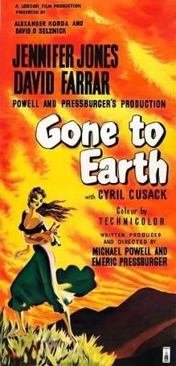

Gone to Earth
Studio: London Films
Starring: Jennifer Jones, David Farrar, Cyril Cusack
Director: Michael Powell, Emeric Pressburger
Writer: Michael Powell
Producer: Michael Powell
Gone to Earth is a 1950 British Technicolor drama film created by the director-writer team of Michael Powell and Emeric Pressburger. It stars Jennifer Jones, David Farrar, Cyril Cusack and Esmond Knight. The film was significantly changed for the American market by David O. Selznick and retitled The Wild Heart in 1952. Gone to Earth is based on the 1917 novel of the same name by author Mary Webb.
Trivia
- Based on Gone to Earth (1917 novel by Mary Webb).
- Many locals were recruited as extras, such as the choir from a local Methodist church that appears in the film.
- The film was coproduced with American producer David O. Selznick, who had a penchant for dictating long and rambling notes to his directors while under the influence of amphetamines and flooded the production with memos, most of which were ignored.
Filming Locations
- Filming on Gone to Earth, which was shot in Technicolor, began on 1 August 1949.
- Studio filming took place at Shepperton Studios in Shepperton, Surrey, while most of the film was shot on location at many sites around Much Wenlock in Shropshire.
Previous Showings
2 Runs • 1 Festival
All runs on record (2):
- December 17 - 18, 1992w/ Stazione Termini
- January 13 - 15, 2010Remembering Jennifer Jonesw/ Love Letters